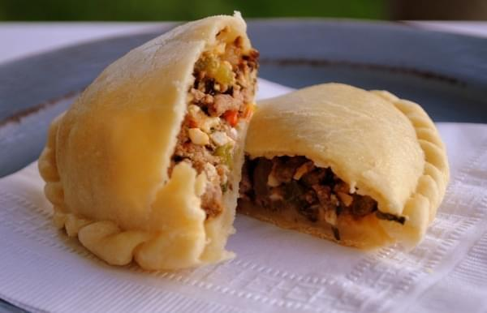

Empanadas Tucumanas
¿Que son las empanadas tucumanas?
Propias de la provincia de Tucumán se tratan de empanadas horneadas, donde una masa crocante contiene un relleno jugoso de carne de matambre, cebolla y cebolla de verdeo, huevos, comino y pimentón. La masa se prepara a base de harina, agua y grasa vacuna.
Ingredientes:
- Harina (1kg)
- Grasa (200g)
- Caldo (300cc)
- Matambre (1kg)
- Cebolla (250g)
- Huevos (6)
- Cebollas de verdeo (3)
- Pimentón (1 cucharada)
- Comino (1 cucharada)
- Sal y pimienta a gusto
Preparación:
- Hervir el matambre en el caldo durante 1 hora, dejar enfriar.
- Formar una corona de harina
- Agregar la grasa y unir con el caldo donde hervimos el matambre hasta conseguir una masa blanda
- Cortar pequeños trozos para realizar bollitos
- Estirar la masa con palo de amasar para realizar los discos
- Picar el matambre en dados pequeños
- Picar las cebollas blancas bien pequeñas
- Colocar una cacerola en hornalla con aceite y una nuez de grasa vacuna
- Colocar la cebolla y rehogar
- Agregar pimentón y carne picada
- Remover
- Agregar una taza de caldo, comino molido y sal a gusto
- Dejar enfriar
- Agregar los huevos picados y la cebolla verde
- Rellenar los discos con la pasta, cerrar y hacer trece repulgues
- Colocarlas en la asadera para horno.
- Cocinar en horno de barro 15 minutos, en otros 20.